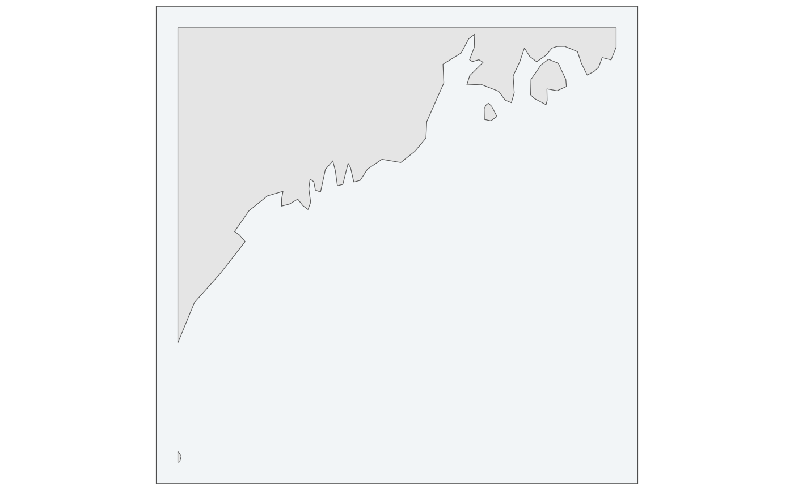
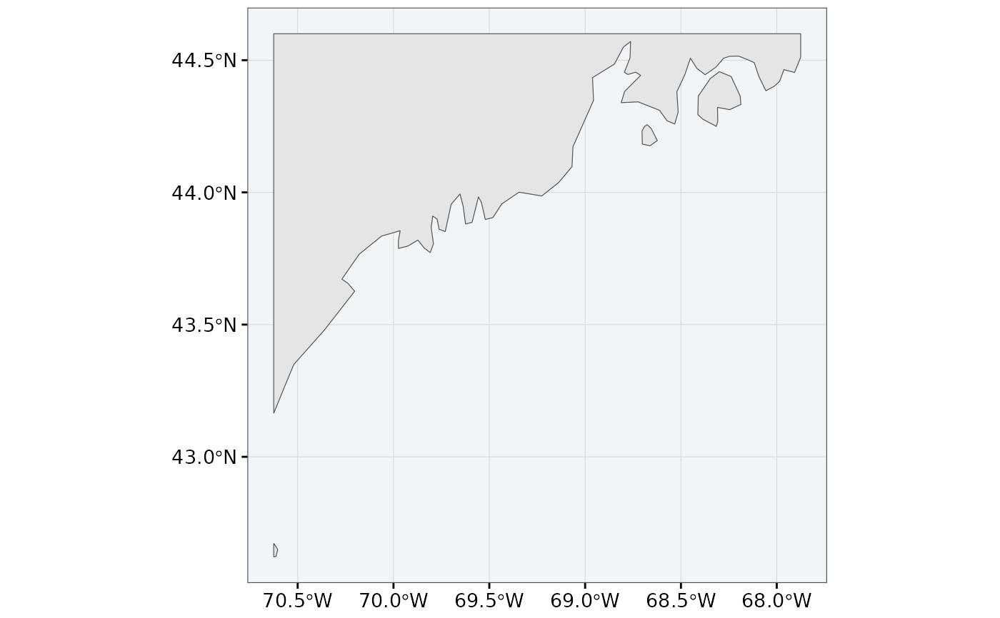

fancyfx::theme_fancyfx() with the axis furniture taken off. An effect plot
wants axis titles, tick labels and a grid, because the numbers on its axes
are the quantities being discussed. A map's axes are its coordinates, which
are almost never what a reader is being asked to look at – and a projected
map labelled x (km) or a geographic one labelled 45.0degN every half
degree is panel furniture competing with the thing being shown.
Usage
theme_fancymap(
base_size = 12,
base_family = "",
legend = "right",
graticule = FALSE,
border = TRUE,
...
)Arguments
- base_size
Base font size in points. Everything else is a multiple of it, so raising it scales the figure and stays balanced.
- base_family
Base font family. Empty lets the device choose.
- legend
Legend position:
"right","bottom","top","left"or"none"."right"suits a tall panel and"bottom"a wide one, which is why the paired and panelled layouts change it.- graticule
Whether to draw coordinate labels and gridlines.
FALSEby default on the reasoning above. SetTRUEwhen the coordinates are the point – a locator map, or a figure whose caption cites positions.- border
Whether to draw a thin frame around the panel.
TRUEby default here, unlike infancyfx: a map has no axis lines to bound it, so without a frame the sea and the page are the same white.- ...
Passed to
fancyfx::theme_fancyfx(), so its per-element size arguments all work.
Details
Sharing a base with fancyfx is deliberate: an effect figure and a map
figure from the same analysis should read as one system, so the fonts, the
sizes and the legend styling come from one place and change in one place.
See also
theme_fancymap_panel() for the variant used inside a multi-panel
figure, and fancyfx::theme_fancyfx() for the base.
Examples
library(ggplot2)
box <- sf::st_bbox(c(xmin = -70.5, ymin = 42.5, xmax = -68, ymax = 44.5),
crs = sf::st_crs(4326))
ggplot(coastline(box)) +
geom_sf() +
theme_fancymap()

# with coordinates, when they are the point
ggplot(coastline(box)) +
geom_sf() +
theme_fancymap(graticule = TRUE)
